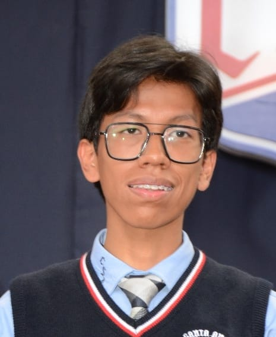
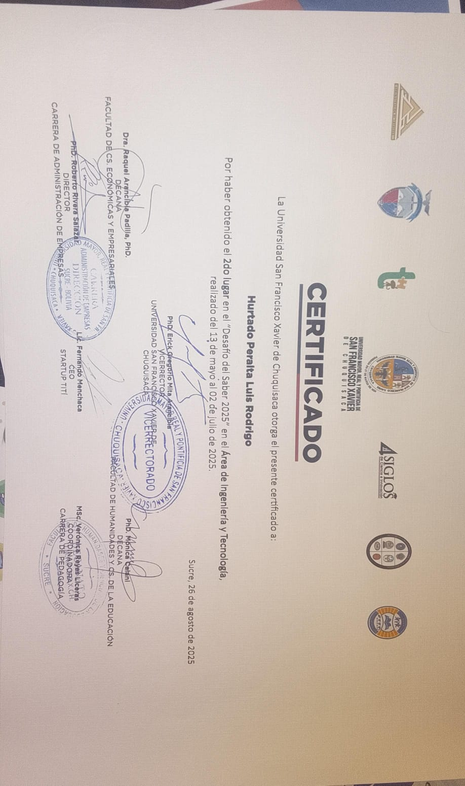
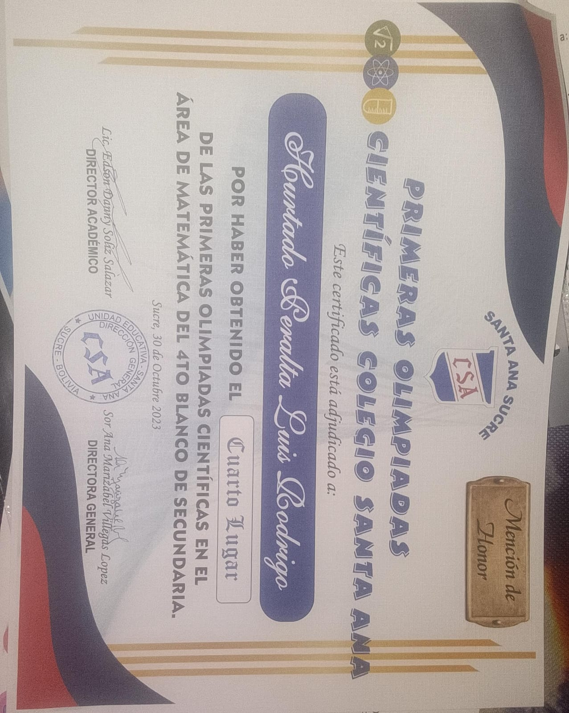
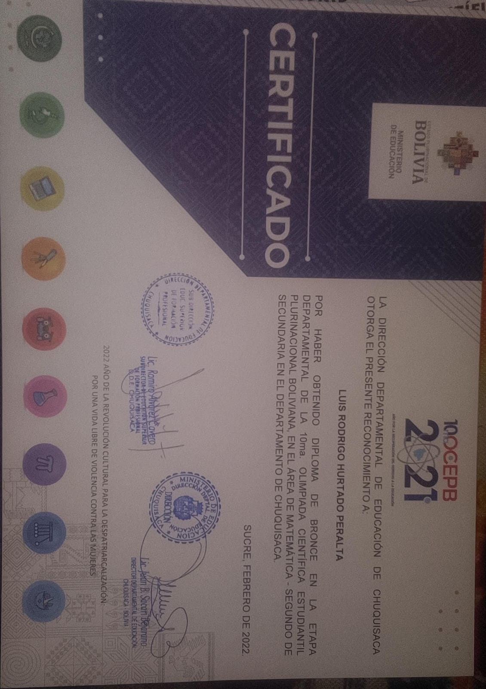
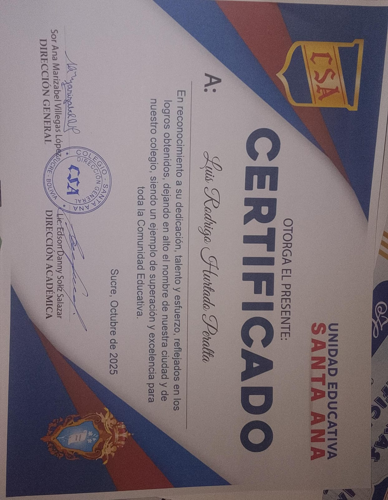

Datos Personales
Nombre Completo: Luis Rodrigo Hurtado Peralta
Fecha de Nacimiento: 22 de Febrero de 2008
Lugar de Nacimiento: Sucre, Bolivia

Formación Académica
- Título de Bachiller - Colegio Santa Ana
- 2014 - 2025
Idiomas
Español (Nativo) | Inglés (B2)
Otros Cursos y Seminarios
-Curso PreUniversitario de Física I
Habilidades o Competencias
-Concurso "Desafío del Saber 2025" en el Área de Ingeniería y Tecnología
-Primeras Olimpiadas Científicas del Colegio Santa Ana - Matemáticas
-Bronce - Etapa Departamental de la 10ma. Olimpiada Científica Estudiantil
-Alto Rendimiento Colegio Santa Ana




Motivo de mi Carrera
Elegir Ingeniería de Sistemas no fue una decisión basada únicamente en el gusto por la tecnología, sino en la fascinación por la arquitectura del mundo moderno. Vivimos en una era donde las líneas de código son los ladrillos de nuestra realidad; donde un algoritmo puede determinar desde cómo nos comunicamos hasta cómo resolvemos los problemas más complejos de la humanidad. Para mí, estudiar esta carrera es aprender a hablar el lenguaje que está construyendo el futuro, una mezcla perfecta entre la lógica matemática más rigurosa y la creatividad más libre.
A menudo se piensa que el ingeniero es alguien aislado frente a una pantalla, pero la realidad es mucho más dinámica. Ser ingeniero de sistemas es, en esencia, ser un traductor de necesidades. Tomamos un problema abstracto del mundo real y lo transformamos en una solución tangible, eficiente y escalable. Esa capacidad de abstracción es lo que realmente me apasiona: la posibilidad de crear algo de la nada, de ver cómo una idea se materializa en una herramienta que facilita la vida de miles de personas. Es un ejercicio constante de resolución de acertijos donde la recompensa es la innovación. Además, esta disciplina ofrece una perspectiva única sobre el orden y el caos. Me motiva entender cómo estructuras invisibles sostienen los sistemas financieros, médicos y educativos de todo el planeta. No se trata solo de "arreglar computadoras" o programar aplicaciones; se trata de diseñar ecosistemas digitales que sean resilientes y humanos. En un mundo saturado de información, el reto del ingeniero es filtrar el ruido y construir puentes sólidos entre los datos y las personas.
Finalmente, estudio Ingeniería de Sistemas porque busco una evolución constante. En este campo, el aprendizaje nunca se detiene. Esta carrera me obliga a ser adaptable, a cuestionar mis propios métodos y a mantener una curiosidad insaciable. Al final del día, mi objetivo no es solo entender cómo funcionan las máquinas, sino utilizar ese conocimiento para diseñar un mañana que sea más conectado, inteligente y, sobre todo, funcional para todos.
Referencias Personales
Celular: 75436939
Celular Tutor: 78698894
Correo: hurtadoluisrodrigo@gmail.com